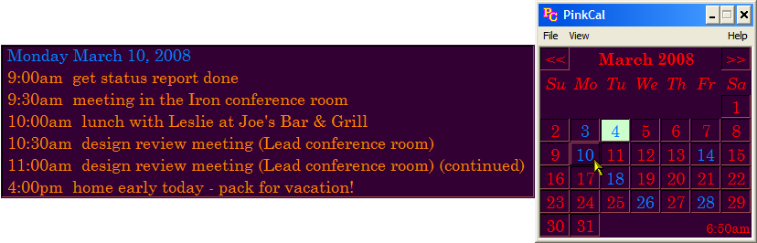

Quick-Check
PinkCal can show you your schedule when you move your mouse over the calendar - it looks like this:

When the mouse moves
over a date, a pop-up window shows a summary of
the days events.
When the mouse moves away, the pop-up disappears.
[Works in the Year View too.]